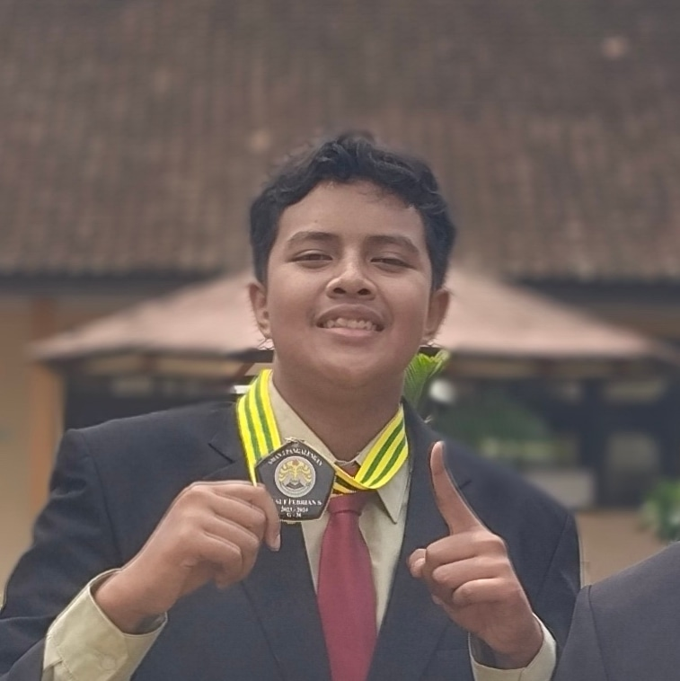

Pengemudi handal, disiplin, dan bertanggung jawab tinggi. Berfokus pada keamanan berkendara, ketepatan waktu, serta kenyamanan penumpang.
SIM A
Mobil / Roda 4
SIM C
Motor / Roda 2
Telkom University
Pendidikan Tinggi
SMAN 17 Bandung
Sekolah Menengah Atas
SIM A & C
Status Aktif
Safe Driving
Utamakan Selamat
Stamina Tinggi
Eks Atlet Renang
Pribadi yang disiplin, jujur, dan memiliki tanggung jawab tinggi terhadap keamanan serta kenyamanan perjalanan. Berlatar belakang sebagai atlet renang yang terbiasa dengan ketahanan fisik prima, fokus penuh, dan ketepatan waktu. Bagi saya, mengemudi bukan sekadar menjalankan kendaraan, melainkan menjaga keselamatan penumpang serta memastikan seluruh operasional perjalanan berjalan dengan tenang, tepat waktu, dan tanpa kendala. Siap bertugas untuk kebutuhan perorangan, pimpinan perusahaan, instansi, maupun lembaga pendidikan.
Menghargai waktu dengan senantiasa hadir tepat waktu, merencanakan rute perjalanan terbaik, dan siap siaga mendukung jadwal kegiatan pimpinan maupun operasional kantor.
Memastikan unit kendaraan senantiasa dalam kondisi bersih, harum, dan aman digunakan melalui pemeliharaan rutin (pengecekan oli, rem, tekanan ban, serta kelayakan mesin).
Menjaga privasi penumpang secara profesional, bersikap sopan, ramah, serta tetap tenang dan sigap saat berkendara di berbagai kondisi lalu lintas.
Juara 1 Lomba Renang - Kabupaten Bandung
Kedisiplinan latihan atletik membina stamina fisik yang tangguh, ketahanan tubuh agar tidak mudah lelah, konsentrasi tinggi, serta tingkat kewaspadaan yang kuat saat berkendara jarak jauh maupun durasi panjang.